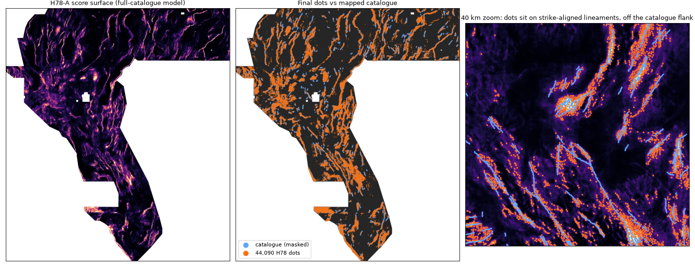

Download
⬇ Download research GeoTIFF — NOT CLEARED FOR SUBMISSION (44,090 dots, 0.15 MB) ⬇ Research ZIP — do not submit Writer receipt (JSON)sha256 6815eac5ff08d913207fa725b7be8ce79c0493d480d17591b7415ab0062acc54
| Historical candidate name (do not enter in portal) | gems78-h78a-strike-steered-44090dots-20261021T223126Z-cefe8ce1-zeros |
|---|---|
| Historical note (metadata only; do not paste) | GEMSDOE78 H78-A strike-steered HGB, 44090 dots >=283m apart, flank<=3px pruned; HOLDOUT-DTI 0.1826 s20; not a projection (120 chars) |
| Format | single band float32, [3730, 3292], EPSG:32611, transform [100.0, 0.0, 243350.0, 0.0, -100.0, 4508550.0], all finite, values [0.0, 1.0], NaN inside footprint = 0, positives on catalogue = 0 |
What the numbers mean HOLDOUT-DTI ORGANIZER-CONFIRMED owner-report
Candidate A2_h78_steered|nms0_B3|44090: 0.1826 HOLDOUT-DTI (evaluator gems57-pooled-hide-v2, 11,321 withheld positives, 95 % CI 0.1628 – 0.2004; seed 20, hide 0.2, buffer 3 px).
ORGANIZER-CONFIRMED score for this file: none (it has not been uploaded). A holdout number is never a leaderboard projection.
| Control / comparator (same folds) | HOLDOUT-DTI | 95 % CI |
|---|---|---|
| A2_h78_steered|nms0_B2|44090 | 0.1586 | 0.1417 – 0.1739 |
| A1_iso|nms0_B2|44090 | 0.1462 | 0.1269 – 0.1643 |
| A0_std19|nms0_B2|44090 | 0.1376 | 0.1184 – 0.1553 |
Registry comparators D2.8 and H33 were built with knowledge of the full catalogue (and H33 removed every dot within 2 px of it), so their holdout numbers are structurally handicapped and are shown only for completeness.
| Paired difference, candidate − control | Δ | 95 % CI (paired 20 km blocks) |
|---|---|---|
| A2_h78_steered|nms0_B2|44090 | +0.0240 | +0.0196 – +0.0281 |
| A1_iso|nms0_B2|44090 | +0.0364 | +0.0261 – +0.0464 |
| A0_std19|nms0_B2|44090 | +0.0450 | +0.0341 – +0.0568 |
Beats the lineage base model class (A0, 19 raw bands) with CI > 0: True. Beats the rotation-invariant control (A1), i.e. the steering hypothesis itself: True. Leakage canary: max single-feature AUC 0.5859 (threshold 0.90), flagged: none. Historical uniqueness audit: max |ρ| 0.1265 and max 3-px overlap 0.4372 against only the H19-5/D2.8/H33 lineage rasters. This is not the required full-registry scan; current status is NOT CLEARED (IR-78-16).
Known risk — research only / not cleared for upload (IR-78-09, IR-78-16) HOLDOUT-DTI

The shipped dots sit closer to the mapped catalogue than the family's best live file: primary median distance 6.0 px, 43 % within 5 px, 4 % beyond 30 px — versus H33 median 19.6 px, 15 % within 5 px, 36 % beyond 30 px. The holdout's withheld truth lies median 9.1 px from a visible fault (55 % within 10 px), so it rewards near-catalogue placement more than the live truth may.
Mitigating evidence. Restricting the withheld truth to pixels > 10 px from any visible fault (5,150 positives) the candidate still beats both controls: Δ vs A1 +0.0147 [+0.0060, +0.0240], Δ vs A0 +0.0283 [+0.0171, +0.0398] (B2 variants; paired 20 km blocks), and is on par with D2.8 there. Mean kernel credit per candidate dot by distance to the visible catalogue: 2–3 px 0.014 (12,714 dots), 3–5 px 0.032, 5–10 px 0.045, 10–20 px 0.047, > 20 px 0.026; break-even is 0.2 × DTI ≈ 0.032. This is why the 3-px flank file was historically selected as the H78-A variant (amendment IR-78-01b, declared after results) — every piece of evidence, including the only live step D2.8 → H33, says the near flank is dead weight. This historical within-lane choice does not override the current NOT CLEARED status.
Historical alternative file(s) built from the same model (research inspection only; neither is cleared for upload):
gems78-h78a-strike-steered-44090dots-20261021T223133Z-ec00c053-altB2-zeros.tif— alternative (preregistered 2-px flank default; -0.024 HOLDOUT-DTI vs primary; inspection only); HOLDOUT-DTI 0.1586 [0.1417, 0.1739]; tif · zip (inspection only, not OK-to-submit)
Full tables: evidence/h78_distance_diagnostic.json, evidence/h78_dot_distance_to_catalogue.json. Declared post-hoc: see irregularities IR-78-01b / IR-78-09 / IR-78-10.
Why the family's best file scored 0.2778 owner-report
Measured here from the SHA-256-pinned rasters: H19-5 solid = 121,131 line px; D2.8 = 44,090 binary dots, all on the H19-5 lines, nearest-neighbour spacing min 2.83 px / median 3.0 px; H33 = exact subset of D2.8 with 37,654 dots, the 6,436 removed dots all 1.0–2.0 px from the catalogue. Owner-reported chain 0.1922 → 0.2600 → 0.2778 with no detector change: the metric charges 0.2 per emitted pixel and gives max-credit per truth pixel, so redundant and near-catalogue mass was pure cost. The full argument, and what it implies for beating 0.2778, is on the hypotheses page.
Read this first (every session)
- The original project prompt is archived verbatim in PROMPT.md and summarised in the README; it is the specification.
- Reproduce:
python scripts/run_holdout.py --seed 20→python scripts/build_submission.py→python scripts/build_site.py. Inputs are restored and SHA-256-verified byscripts/restore_data.sh. - Labels: HOLDOUT-DTI measured here on withheld catalogue segments; ORGANIZER-CONFIRMED copied from a DrivenData receipt (none exist for this repo); owner-report a score the family wrote down, not independently authenticated.